A little about the bikes I've owned...
Originally I drove a little Toyota Tercel econo-box. It got me places and didn't cost a lot of money, since I knew of a decent shop in Ocala run by a Greek guy who would actually fix things for a decent price. However I'm 6'2" and I didn't fit in it very well. It also didn't have much power, but the automatic transmission was well-matched to the engine, and managed to make it drivable.
Then I came to Orlando and discovered that the car shops don't do very good work. I didn't have the money or ability to keep the Toyota running, as I was pretty much mechanically illiterate. When the timing chain broke and instantly put $500 on my new credit card, I had to do something. I was a student and didn't have that kind of money.
1982 Honda CB450SC NighthawkCost: $600. Win: Most comfortable stock seat. Lose: Rock hard tires. Not much power. This was a bulletproof little 450 that I bought from my boss' husband for $600. The stock seat was so comfortable I had people try to buy it off me. It had rock hard Cheng-Shin tires, and I quickly discovered the disadvantages of cheap Chinesium tires. I dropped that thing dozens of times, but all it ever needed was new turn signals. I never managed to damage the tank or anything else, except for bending the front forks once. When I went to fix the front forks, it introduced me to the fun of working on bikes and collecting weird Honda special tools. Until then, I'd had no idea I was mechanically inclined at all. This started a tradition of red bikes. At this time I had a roommate with a GSXR Limited Edition with the dry clutch. He later got an RC-30, then a ZX-11. So I was trying to keep up with him and folks on CBR-600F2s and Interceptor 750s. That was interesting. |
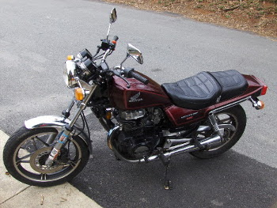 |
1984 Honda VF750S "V45 Sabre"Cost: $900. Win: POWER. Fairing. Digital LCD displays and stepper-motor instruments driven by an RCA 1802 microprocessor. Lose: horribly underdesigned suspension. Hard to work on. Soft cams. I bought this huge V-4 brute for the princely sum of $900. This one had the full Hondaline fairing, which made it look even bigger. The fairing wasn't that high, but with the flip and the typical Honda attention to aerodynamics, it gave excellent coverage. The digital LCD displays and stepper-motor instruments were driven by an RCA 1802 microprocessor, and were far ahead of its time. The horribly underdesigned suspension couldn't cope with the heft of the rest of the bike. Mine was a dark maroon/wine color like the GSX1100G instead of red, but otherwise this picture is pretty close. I couldn't afford a Corbin seat, so for a while I had one of those cheap JC Whitney white-trash specials. The bike was rough to work on. For instance, prying the carbs out of the center of the vee was listed as a 6 hour job for an experienced mechanic, and took a lot of muscle. There was also an issue of soft cams that would pit and wear, but my bike didn't have any problems. |
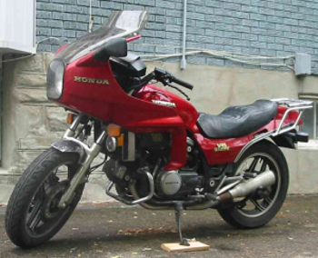 |
1983 Yamaha XZ550 VisionWin: NONE Lose: EVERYTHING. Complete piece of garbage My bike never looked this good. This "bike" had a dodgy shaft-drive and a strange automotive style single downdraft carburetor. It was such a piece of crap I don't even remember what happened to it. Mine was Krylon spray-paint black. The pipe fell off on the way home. I was suffering from motorcycle deprivation syndrome when I bought it, and I should have gone home when they had to push start it to get it running. I still have the service manual and some bad memories. I later heard all the Visions had a casting defect in the carburetor that explained the nonexistent cold starting. |
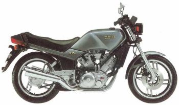 |
1985 Suzuki GS550EFCost: $200. Win: Easily-replaced frozen rings. Nice little oil-cooled inline-4. Lose: Slow. Strange siamesed carburetors with two bores and two linked slides per vacuum chamber. Eventually stolen. Note: That's a couple of roommates, not me. I bought it for $200 from a car dealership as it had been taken as a trade-in and didn't run. I spent a little time and money replacing frozen rings and it was a pretty nice little oil-cooled inline-4. The top end and cylinder block could be removed with the engine in the frame, which made life MUCH easier. It had strange siamesed carburetors with two bores and two linked slides per vacuum chamber. It was eventually stolen one night from in front of my apartment. It was racy-looking but not that fast. Even a Katana could outrun it, which is quite sad. |
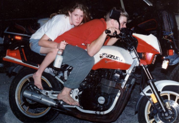 |
1982 Suzuki GS1100LWin: Shaft drive. Destroyed a left-turning Subaru. Lose: Lunched transmission. Lunched stator, rectifier, and regulator. Lunched starter motor. Clutch made of potmetal. Lunched carburetors. Complete piece of garbage. This was another big heavy shaft-drive beast with a two-tone blue color scheme. Some friends who saw how easily I fixed up the 550 bought this bike with the engine in a box, with the intention to fix it up and sell it. Turned out the bike had been terribly mistreated and the transmission was completely lunched, and that rebuilding it was a major money-losing proposition. After the GS550 was stolen, I bought it for transportation, which was a big mistake. This is a picture of the actual bike in its normal state. Actually, that's not true, it looks like the engine is in one piece. When they got it running, it wouldn't stay in gear. When they popped off the oil pan to check out the transmission, lots of ball bearings dropped out. This is never a good sign. It turned out that a bearing died and the balls had gotten between some of the gears. One of the gears had 1/3 of the teeth ripped off, and one of the mainshafts had a hairline crack visible for the entire length of the shaft. We had to buy both gear clusters from a junkyard. There was a morning when it wouldn't start. Not even a click, but the front light was nice and strong, and there was no blown fuses. I finally took the starter motor off, removed the front cap, and poured what was left of the rotor out. The core had completely and totally shattered into coarse sand. I've never seen anything like that. The windings were still in hollow rectangles. We had to buy a new starter from the junkyard. The previous owners had decided to do carb mods, which included removing the idle mixture screws completely and losing some of the springs and o-rings underneath. This is great for performance until you wish to exceed 45mph. In addition, the floats were majorly screwed up, and the idle jets were stripped beyond repair. We had to buy an entire bank of carbs from the junk yard. I think we sent the junkyard owner's kids to college, or at least allowed him to retire to the Caribbean. Once when the stator and regulator were both toast, I used to carry a quick start jump unit and plug it in where ever I could steal some 110v power. I was working at UCF as an assistant in the computer labs, with long late hours. When I needed to go home, I had to push the bike around campus at 2am looking for power. Once I saw a UCF police car drive up, and I thought I was really going to get interrogated. Nope. They drove right past the helmetless guy pushing a bike. No "do you need help?" or "what are you doing?" or even "is that your bike?" I did get busted once on the way home from work on the expressway because my front light was out. I had removed the fuse so the battery would last long enough to get home. Since the shorted stator would kill a new regulator and vice-versa, I splurged on a brand new stator and regulator from a place on the brand new Internet-thingie. The difference in the technology was so great, the old stator looked like it came off a World War I plane and the new one looked like it came from the Apollo project. The windings in the old stator were woven-fabric-insulated, for god's sake. It was expensive, but worth it. Yet another morning, I was leaving for work dressed nicely in a white shirt and tie. The bike was on the centerstand and when I tried starting it, it started hopping about an inch vertically on the centerstand, making a horrible banging noise. It turned out that one of the bolts for the clutch had backed out and was banging away inside the engine cover. I drained the oil, removed the side cover, inspected everything, cleaned the metal filings out of the side cover in the sink, reassembled it all and filled it back up with oil, without getting my shirt and tie dirty or becoming late for work! When you can do this is when you know you need to buy a new bike. I got rid of the Suzuki by smacking it into a Subaru turning left in front of me on University Blvd, on the way home from work. It absolutely totaled that Subaru, to the tune of a bent axle, a bent frame, and one of the rear wheels ripped off. I went over the top and slid for about 170ft. Wear your gloves, helmet, and jacket, folks. The Suzuki's motor shattered into sharp triangular fragments like a dropped crockery jar. That was very strange. |
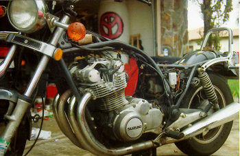 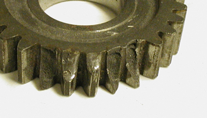 |
1989 Honda NT650 Hawk GTCost: $2,100. Win: Single-sided swingarm. Corbin seat. Lose: Slow. Crap stock suspension. Stolen. I bought it in Miami in September 1995 for $2,100. Nifty V-twin with a single-sided swingarm and an aluminum beam frame, but not much punch in the engine. It got a badly leaking head gasket on the way home from an airshow, but being a V-twin, it was dead simple to fix. It had a front end rebuilt by a local Mercedes mechanic that loved Hawks, so it drove like a dream. It also had a Corbin seat on it. It was stolen from work over the Thanksgiving weekend. Eventually the cops caught a little black kid riding it, with a CBR-600 front end on it, totally clapped out, with the seat ripped up and the tank dented and repainted with a spray can. |
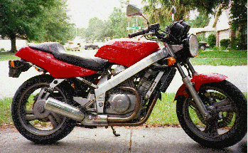 |
1985 Yamaha RZ-350Win: Two-stroke. Corbin seat. Lose: Two-stroke. Kickstart-only. Bought from T&D Yamaha. Transmission that ate shift forks. Selling it. rrrRRRRR-INNNNGGGGG-ding-ding-ding-ding-ding-ding!! I bought this from T&D Yamaha. Those thieves wouldn't let me test ride it, and didn't even include a working speedometer cable, so I had to go back and get them to install one. This was the last street-legal 2-stroke, in the red/white/blue color scheme, with a small cafe fairing. Much fun. It was kickstart-only, of course, but it always started on the 2nd or 3rd kick. It did demand high quality 2-stroke oil, or it would gum up the YPVS valve. I had the 3rd/4th gear pair develop a rough spot which ate up shift forks and I had to disassemble and repair it. There's good things to be said about an engine that you can put in your lap and work on. I discovered that the Yamaha Banshee quad uses the exact same engine, except without a YPVS valve. This meant transmission parts were still in production, still available, and dirt cheap, comparatively speaking. I put some nice DG pipes on it after it blew a silencer off in the middle of traffic. Except for the pipes, and the fact that the previous owner had sawed off the turn signals, it was pretty much stock. I went to the 1998 Honda Hoot in Asheville, NC on this bike, believe it or not. Other than a Suzuki Gamma I saw, I think I was the only 2-stroke there. I seriously regret selling this bike. |
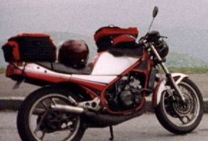 |
1993 Suzuki GSX1100GWin: Shaft drive. Lose: Heavy. I needed a real commuter bike, so I traded the RZ-350 in for another big heavy shaft-drive Suzuki beast, this time in much better shape. I put a Corbin seat on it, which I bought at the Daytona store and had fitted directly to the bike. I had a car turn left in front of me at 50 & Rouse, and I dodged him but I still ended up putting a nice road rash grind into the side of the tank, and I eventually had to replace the pipes. I made a bad left turn and got smacked by a car at Publix on 04-MAY-2001. It had over 75,000 miles on it at that time. |
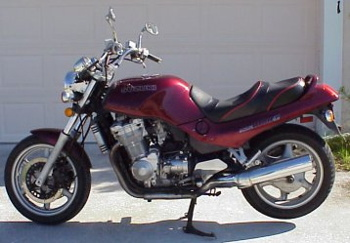 |
I drove a Camaro for a while... until the defective ABS betrayed me and locked up the brakes, and I slid backwards into some Aramco in the rain.
2002 Suzuki SV-650Win: Light. Powerful. V-twin. First brand new bike. Lose: Suzuki. Carbureted. Uncomfortable stock seat. Light and powerful V-twin sportbike. This is the last year it was carbureted, with the Ducati style frame and nice looking tail. It's a lot of fun, like having a 70HP Schwinn bicycle. Suzuki hit a home run with this engine and it's a major choice for racing. This is the first bike I bought brand new, and I finally got the black bike I always wanted. |
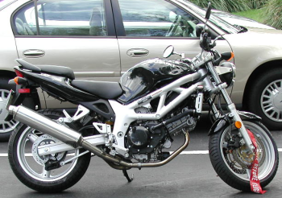 |
2005 Suzuki DL-650 "V-Strom"Win: Fuel-injected Lose: Suzuki. Ugly. Nerfed engine plus more weight. Horribly uncomfortable stock seat. No handling whatsoever. Crap stock windshield. It uses the second-generation fuel-injected SV engine with cams "modified for more midrange power" - except as usual, that's not true - they were seriously nerfed. The first thing I didn't like about it was that the stock windshield directed the full wind blast straight at my head and beat the crap out of me. I solved this with an extra-tall Cee Bailey's screen. Thanks to twistedthrottle.com and other folks only too happy to take my money, I added:
I managed to get the Sargent seat for only $153, including tax and shipping, even though it retails for $380. Sargent asked on their website if anyone was interested in a seat for the V-Strom, and I signed up. It turns out that they decided to take $50 off for anyone that preregistered this way. I also went to the Sargent open house during Bike Week '06 and I managed to win a $200 gift certificate which of course I applied toward the seat. This also meant a large reduction in sales tax too. Yay! It's worth every last penny over the stock piece of crap. I literally couldn't even make it all the way to Daytona on the stock seat. If you look at the stock seat, you notice it has a pronounced U-shape, so you end up sitting in the middle of that and you can't change position. It's also really soft, and you sink into it so that it manages to hit every sensitive spot it can. A motorcycle seat needs to be wide, flat, and hard. The stock RZ-350 seat was more comfortable than any of the Suzukis, and nothing compares to the Nighthawk seat. Still, nothing can hide that it's a bargain-basement bike with crap suspension, and that nerfing the engine then putting on 40lbs wasn't a good idea. |
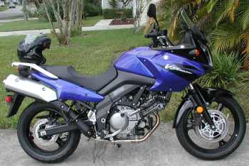 |
2007 Yamaha FJR-1300 (Current)Win: Shaft drive. Fairing. ABS. Power. Handling. Comfortable stock seat. Lose: Heavy. Fairing makes maintenance difficult. Clutch is worse than a Harley-Davidson, and you end up being able to crack walnuts with your left hand. I took the V-Strom to Deal's Gap, and it basically ran out of power and handling. You couldn't feel the front end, and it really struggled through things like tight uphill left-hand hairpins. When I started looking longingly at things like the Buell Ulysses, a friend knew that you didn't let friends buy Harleys, and took me to trade the V-Strom in for a really good deal on the FJR. Wow. This thing is a 145hp 660lb beast. However, the biggest shock is that it's as comfortable as it is powerful. the stock seat had no problem with the 700 mile trip back home. I've added a Givi top box mount and the requisite air horn, plus an extremely tall windshield from Cee Bailey's. I fixed the clutch by installing a 2009 slave cylinder, which is 4mm larger in diameter. I also replaced the clutch itself with a 2016 easy-pull slipper clutch. |
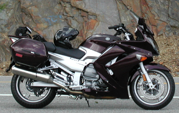 |
2008 Suzuki SV-650 ABSWin: Light. Powerful. V-twin. ABS. Lose: Suzuki. Needs $800 computer diagnostic system to work on it. At 55,000 miles, I upgraded to a newer SV with ABS and fuel injection and sold the old one to an FJR Forum member. One thing I'm upset about is you need an $800 computer diagnostic system to work on fuel-injected Suzukis, which is not really available to the general public. You can't even sync the throttle bodies without it. The seat was almost as bad as the V-Strom's, and I got another Sergent seat. The rear fender was an atrocity. |
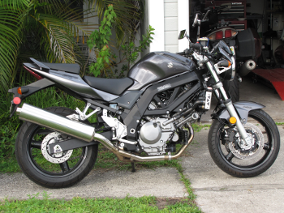 |
2015 Zero SR 12.5 with Power Tank (Current - no pun intended...)Win: ELECTRIC! Power. Smooth. Torquey. Handling. ABS. No maintenance. No clutch. Belt drive. Upside-down forks. Nice brakes. Excellent suspension. Decent range for an electric vehicle. Lose: If it breaks, you get to keep both pieces. It's electric! I test drove a Brammo in Tampa on a whim. I didn't like the transmission, but I loved the electric motor. T&D Yamaha has become Orlando Yamaha Kawasaki with much nicer folks, and was the local Zero dealer for a while. They gave me a test ride without any hassle, and I was hooked. I traded the SV-650 in for it, and this is the first time since 2002 that I've been without a little V-twin. This is my first electric bike, first belt-drive bike, first bike with upside-down forks, first American-made bike, and first non-Japanese-made bike. It is a very sweet ride. It's incredibly powerful. It's like an RZ-350 with modern suspension and an FJR motor. Except the FJR could never hope to be that smooth, controllable, and torquey. |
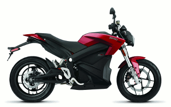 |